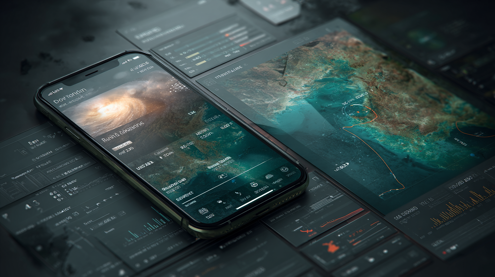

Learn how weather travel planning and dynamic itinerary management systems help businesses optimize travel schedules, reduce costs, and improve traveler satisfaction.
Dynamic itinerary management systems represent a revolutionary shift in how businesses approach travel planning and execution. These sophisticated applied AI platforms automatically adjust travel plans in response to real-time conditions, particularly weather events, ensuring optimal routing and minimal disruption. As extreme weather events become more frequent and unpredictable, organizations are recognizing traditional static travel planning methods are insufficient for maintaining operational continuity and traveler safety.
The integration of weather-responsive planning into travel management marks a fundamental transformation in the industry. Rather than treating weather as an unavoidable disruption, modern systems proactively incorporate meteorological data into every aspect of trip planning, from initial booking through journey completion. This approach has evolved from reactive crisis management to predictive optimization, enabling businesses to maintain productivity while ensuring traveler wellbeing.
Weather-responsive travel technology encompasses sophisticated software solutions continuously monitoring meteorological conditions and automatically adjusting travel plans accordingly. These systems integrate multiple data sources, including satellite imagery, ground-based weather stations, and predictive models, to create comprehensive environmental awareness. The core components include real-time data aggregation engines, predictive analytics modules, and automated decision-making algorithms working seamlessly to optimize travel routes and schedules.
The evolution from static to dynamic travel planning represents a paradigm shift in corporate travel management. Traditional systems relied on fixed itineraries requiring manual intervention when disruptions occurred. Modern dynamic platforms, however, continuously evaluate conditions and proactively suggest or implement changes before problems arise, transforming travel management from a reactive to a proactive discipline.
Modern dynamic itinerary systems incorporate live weather data through sophisticated API connections to multiple meteorological services. These platforms process thousands of data points per second, analyzing everything from current conditions to long-range forecasts across global destinations. The integration extends beyond simple temperature and precipitation monitoring to include complex factors such as wind patterns, visibility conditions, and severe weather warnings.
Automated weather monitoring delivers substantial benefits for travel planning efficiency. Systems can instantly identify potential disruptions across entire travel networks, alerting managers and travelers to developing situations hours or days in advance. This early warning capability enables preemptive rebooking, route adjustments, and accommodation changes minimizing both inconvenience and costs.
Artificial intelligence analyzes vast historical weather datasets alongside current conditions to predict travel disruptions with remarkable accuracy. These systems learn from millions of previous weather events and their impacts on travel patterns, continuously refining their predictive capabilities. Machine learning algorithms can identify subtle patterns human analysts might miss, such as the cascading effects of weather events on connecting flights or ground transportation availability.
Predictive modeling in travel planning extends beyond simple weather forecasting to encompass comprehensive risk assessment. AI systems evaluate multiple variables simultaneously, including seasonal patterns, regional climate trends, and infrastructure vulnerabilities, to generate probability-based recommendations for optimal travel timing and routing.
Dynamic systems adapt to individual traveler preferences through sophisticated profiling mechanisms to balance personal comfort with business requirements. These platforms learn from past travel behavior, understanding whether specific travelers prefer early morning flights, have flexibility in their schedules, or require certain amenities during weather-related delays.
Personalization features for weather-based routing consider factors such as traveler seniority, meeting importance, and individual risk tolerance. The system might route a senior executive around potential weather delays even at higher cost, while suggesting more economical alternatives for flexible travelers.

Organizations implementing dynamic itinerary management report average disruption-related cost reductions of 35-40%. These savings stem from decreased last-minute rebooking fees, reduced accommodation expenses from weather delays, and minimized productivity losses from stranded travelers. A Fortune 500 company recently documented $2.3 million in annual savings after implementing weather-responsive travel technology.
Operational efficiency improvements extend beyond direct cost savings to include reduced administrative burden on travel managers, faster expense processing, and improved resource allocation. Automated systems handle routine adjustments without human intervention, freeing staff to focus on strategic initiatives.
Traveler experience metrics show dramatic improvement with dynamic systems implementation. Satisfaction scores typically increase by 25-30%, with travelers reporting reduced stress, better communication, and increased confidence in their travel arrangements. Studies indicate 87% of business travelers prefer organizations providing proactive weather-related travel management.
Successful implementations demonstrate tangible results. A global consulting firm saw employee travel satisfaction scores rise from 6.2 to 8.7 out of 10 within six months of deployment, while simultaneously reducing weather-related travel complaints by 68%.
Dynamic systems significantly reduce weather-related travel risks by preventing travelers from entering dangerous situations. These platforms maintain continuous monitoring of traveler locations relative to severe weather events, automatically initiating evacuation or shelter protocols when necessary. This capability proves invaluable for maintaining duty of care obligations and ensuring regulatory compliance.
Successful integration begins with comprehensive stakeholder engagement and clear objective definition. Organizations should establish cross-functional implementation teams including IT, travel management, finance, and human resources representatives. The deployment process typically spans 90-120 days, encompassing system configuration, data integration, user training, and pilot testing phases. Critical success factors include executive sponsorship, robust change management protocols, and phased rollout strategies enabling iterative refinement based on user feedback.